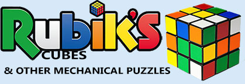

Wecome to my website about Rubik's Cubes. Here you will be able to explore many things about the mysteries and tricks about the Rubik's Cube.
In my first page, you will learn about how to solve the Rubik's Cube. In my second page, you will learn about Fun paterns you can make with the Rubik's Cube. In my third site, you'll learn about other exotic puzzles. Click on the links on the table below to explore them.